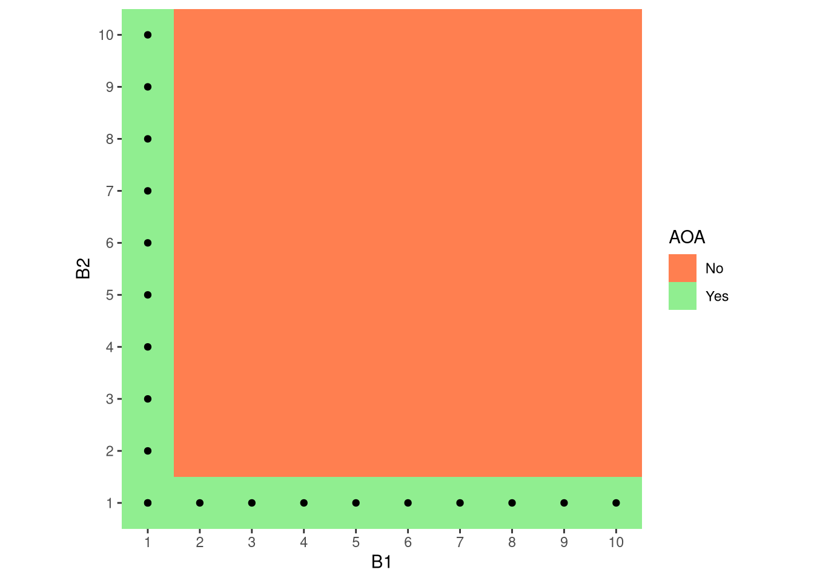
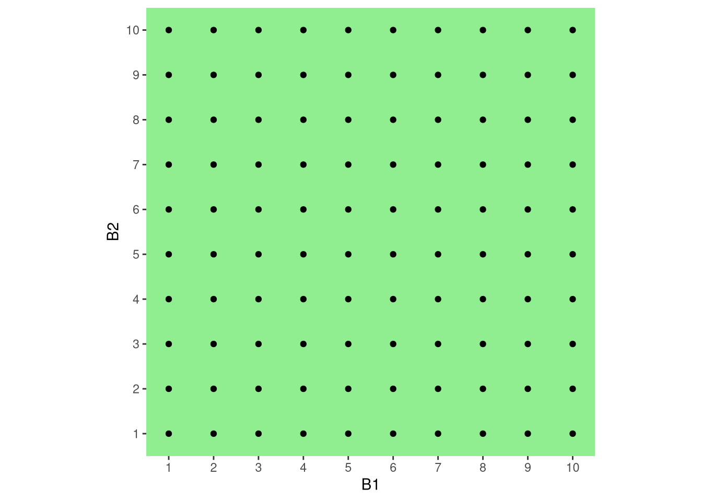
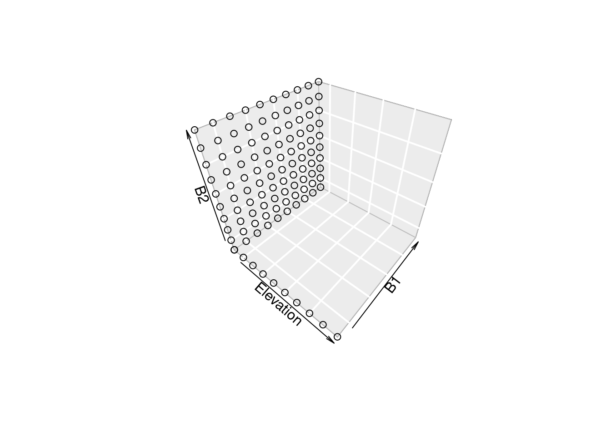

Chapter 4 Variable Selection
4.1 Effect of Additional Variables on Machine Learning Model Extrapolation
4.1.1 The basic assumption
Imagine we only have predictors with their values ranging from 1 to 10. Using one predictor to model some response, lets assume we have a sample of 10 points each with a different predictor values. We can assume, that this one predictor gives us a 100 % Area of Applicability, since we have covered the whole range of predictor space.
4.1.2 Extrapolation
If we use a second predictor, also covering its full range from 1 to 10, it is not guaranteed that we cover the whole combined predictor space. The worst case scenario is, that predictor B2 covers is only sampled at a single value of predictor B1.
This leaves 90% of the combined predictor space uncovered leading to extrapolations of the machine learning models. We need much more observations (10 values of B2 for each of the 10 values of B1, 100 in total) in order to cover the full predictor space.
|  |  |
4.1.3 One more variable
This effect is magnified in higher dimensions. With just 3 of our fictional variables, we would need 10x10x10 = 1000 sampling points to cover the whole predictor space. Preventing extrapolation is therefore much more likely with fewer variables, since we have a much higher chance to cover the full combined predictor space.
